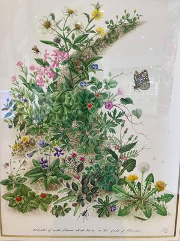
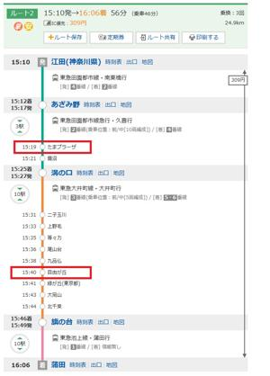

うるがいの話 ある日
最新: 「自由が丘」駅【うるがいの話 ある日】とは 一日だけのプログです
『うるがいの話』の最新一日だけのプログで、通信料が少なく経済的だ。カニの画像をクリックすると全ての日付が載る『うるがいの話』サイトを表示します
|
|
【うるがいの話】 うるがい(ｳﾙｶﾞｲ urugai)とは、『もずくがに』の名前でとても大きくなります。 |
|---|---|
|
|
【カミマヤーの話】 猫のことを方言でマヤーといいます。カミマヤー（kamimayaa）とは、神の猫のことです。 |
|
【たながぁの音楽】 たながぁ（ﾀﾅｶﾞｰ tanagaa）とは手長えびのことで、何種類かあり大きいのは車 エビぐらいになります。 |

|
【ぶながぁの話】 ぶながぁ(ﾌﾞﾅｶﾞｰ bunagaa)とは、赤い髪の毛、赤い身体、そして身長は１ｍ２０ｃｍ ぐらい、川の蟹を食べているの目撃された。場所は沖縄県国頭郡大宜味村のと ある村僕の隣近所に住んでいる爺さんから、聞いた話です。 |
|
|
【ギーマの話】 ギーマ(giima)とは、山原の里山に咲くスズランに似た、 花を付けます。実は食べられます、 気が付くと口の周りが紫になっています。 |
2023年07月10日 (月）「自由が丘」駅
15:58
 
県立図書館へ行ったら植物図が展示されていた。写真を撮るナとなかったので
写真を撮る、上手いものだ。
『傘のさし方がわからない 小学館 岸田 奈美‖著』を読んだ。ヨメが借り
てと言われ本で、昨日読んだからと渡され明日が納期である。
車いすユーザーの母のために、「全財産を使って外車を買った」
バイクの免許をとるため、教習所を通っていたとき車椅子に乗った乗車の教習
生と何度か、時間が重なった。車椅子で乗るんだ、ホーとその時は感じただけ
だが、免許を取得したあと車イスを利用して乗れるの車がいるのだ！と気づく
「歩いてたら３０分で６人から「ケーキ屋知りませんか？
自由が丘の裏路地の階段でうなだれていた・・・・・・
おお、懐かしい「自由が丘」だ、確かに通勤のとき朝夕通り過ぎた所だベ。確
かか？とヤフーの路線情報を検索した（江田から蒲田）、たしかに懐かしい駅
の名前がある。オカ部長に新入社員が連れらて、住み込んだ寮の当時の住所を
検索してみると『横浜シフォン』というケーキ屋さんになっていた。その当時
はあたり一面原っぱが多く、信仰住宅を建設中だった。あれから４０年、この
前オカ部長に会社の寮って無くなりましたよねと尋ねると、殆ど処分したよと
言っていた。電車に乗っている時間は５６分、寮から江田駅までが徒歩１０分
、蒲田駅から研修場所へは８分、約１時間半、マ、普通か。
１５時５１分 ビットコインの総資産 ￥１２、４５４（↓４３）